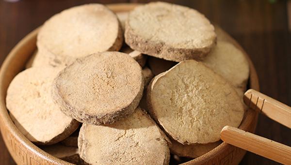
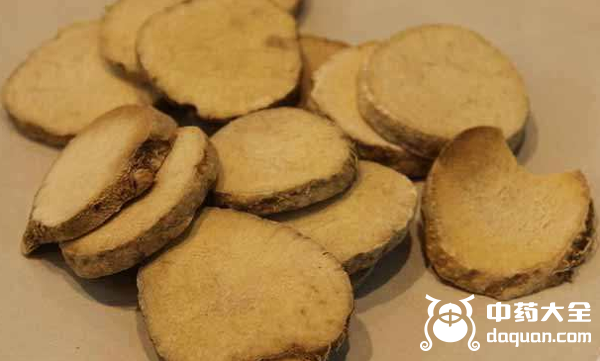
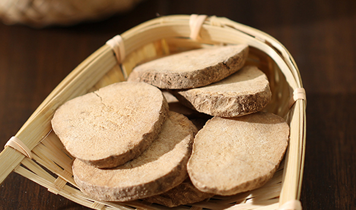

原文连接:https://www.daquan.com/post/11184.html
对泽泻这个名称，大部分人可能并不熟悉，但要是提到六味地黄丸大家应当一点也不陌生了。六味地黄丸的用药配方中有个著名的“三补三泻”，当中三泻之一就是泽泻，利湿而泻肾浊。泽泻因其生长于沼泽边缘地带而得名，既是植物也是药物，药用部位在根茎。那么下面就为大家介绍泽泻的功效和作用。
泽泻的功效
1、利水

泽泻生于水地，直茎向上而生，所以必定有利水的功效。作为利水祛湿的常用中药，泽泻对于小便不利、水肿、痢疾和热淋等病症都有很好的治疗效果，还能改善呕吐、痰多、脚气、尿血这些症状。像有些人动作大的时候会听见胃内有水声，这时候就可以用泽泻搭配白术进行调理;有小便不顺畅、尿道有灼热感、尿痛的情况出现的时候，就可以与木通、茯苓搭配治疗。
2、清热
泽泻性寒，对阴虚火旺的人群有很好的清热功效，在中药古籍中有很多地方对此做出了说明，写泽泻能起阴气、利膀胱热、消渴、治五淋，这就说明了泽泻对下焦湿热有很好的疗效。不仅能泻膀胱之火，也能写肾经虚火，像有尿痛、小便涩痛、甚至尿血，以及由于肾阴不足、阴虚火旺引起的遗精、盗汗等症状的人群，都可以适当服用泽泻来达到清热通淋的效果。
3、化浊降脂
古籍中记载道，泽泻能去脬中留垢、心下水痞，这也就说明它有化浊的功效。而对泽泻的生物成分进行药理作用的实验后发现，泽泻提取的相关物质，使得肝脏中脂肪含量大大降低。泽泻中的药物成分进入人体后，人体血液中的脂肪和胆固醇、甘油三酯的含量减少了。所以对于脂肪肝的预防和治疗，以及动脉粥样硬化的预防治疗，泽泻都有很好的疗效。
泽泻的作用
1、抗菌消炎

在对有接触性皮炎的小鼠进行的药理实验中，用泽泻煮水喂食给小鼠之后，发现泽泻在小鼠体内产生了抗原特异性，并且使得小鼠的超敏反应得到有效抑制，这就说明泽泻具有很好的抗菌消炎、免疫抑制的作用。此外泽泻对其他菌种，比如结核杆菌、金黄色葡萄球菌和肺炎双球菌等也有一定的抑制作用。
2、降脂
除了中医理论上的化浊降脂的说法，现代科学研究也发现，把泽泻的脂溶性部分用于高血脂、胆固醇的实验动物身上，得到的结果是泽泻的多数成分有明显的降脂作用。这一发现也使得泽泻在高胆固醇血症、动脉粥样硬化等病症方面有更多的拓展和应用机会。
3、降压
在对家兔注射了泽泻提取物后，发现当中的泽泻醇能对动脉有缓慢的收缩作用。即便是在家兔解剖后，动脉离体的情况下，泽泻醇还能抑制由血管紧张素引起的动脉的主动收缩。这就证明了，泽泻醇能够有效松弛血管，加大冠脉的血流量，减少心室的压力，这在高血压以及心脏手术方面将有极大的帮助。
4、降糖

泽泻的降糖效果最初并没有很轻易的发现，再后来通过在家兔皮下静脉注射泽泻浸膏，按照每公斤6克的药物浓度，实验结果发现泽泻提取物对家兔有轻度的降血糖作用。为了更全面的了解泽泻的降糖作用，实验组将静脉注射改换成了皮下注射，结果就完全不同了，皮下注射泽泻提取物对血糖没有任何效果。
5、利尿
古籍里提到泽泻能治五淋、直通水道，这就说明泽泻有很好的利尿作用，相关成分进入人体后，尿量明显增加，体内尿素和氯化物含量降低，尤其是对肾炎患者，效果更加明显。
泽泻的禁忌

本草经里说泽泻畏海蛤、文蛤;肾气不固、精滑、虚寒作泻、目痛者忌之，这也就是说，泽泻与海蛤、文蛤在中医理论上是不能同时使用的，中医有十八反十九畏的说法，这泽泻与海蛤、文蛤就是一对相畏的。其次，肾虚、有滑精现象的人群，也不能使用。另外要注意的是，泽泻是有一定肝肾毒性的，不建议长期服用，以免对肝肾造成损伤。
泽泻的用法
泽泻作为中草药使用的话，一般是煎汤，用量大概在6-12克左右。泽泻搭配茵陈、滑石，能治疗黄疸；泽泻与木瓜、木通、柴胡、苍术、猪苓、萆薢各五钱，能治疗寒湿脚气。其他的用法还有很多，就不一一介绍了，具体的用量要咨询专业的医师或者药师。
结语：通过上文的介绍，相信大家已经对泽泻的功效和作用有了一个基本的熟悉和了解，也希望大家在生活中有需要用到泽泻的地方，能够适当、正确、有效的使用泽泻。